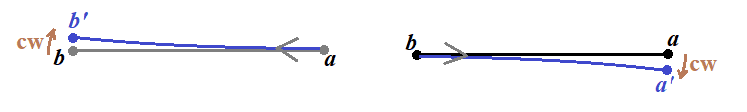

Tarapìa Tapioco6 set 2023, 23:00
Una sferetta di massa \(m\) e carica positiva \(q\) è sospesa a una corda isolante di lunghezza \(\ell\). Il pendolo così formato è posto, a riposo, in un campo magnetico verticale omogeneo di intensità \(B\). L'esperimento mostra che, qualora la pallina venga inizialmente colpita leggermente di lato, essa oscilla avanti e indietro, con il piano di oscillazione che ruota lentamente.
\(1.\) Trovare la frequenza angolare finale \(\omega_0\) del pendolo.
\(2.\) Quanto tempo impiega il piano a compiere una rivoluzione completa?
Physicsguy517 set 2023, 7:14
Is the answer \(\frac{4\pi m}{|qB|}\)
Physicsguy517 set 2023, 7:48
We can think of similarity of a charged ball moving in a plane perpendicular to its magnetic field. The cyclotron frequency is \(\omega\) which is \(\frac{q \cdot B}{m}\) and time period of ball can be found from here. Now, the only difference between our pendulum and ball is that a ball suspended from thread takes twice as long to make a full revolution because it only moves traslationally for half period of time.
Tarapìa Tapioco7 set 2023, 8:04
The answer is correct. But first, drift and write down all the steps with a more detailed explanation.
This problem is very, very, very easy...
Physicsguy517 set 2023, 8:11
Tarapìa Tapioco ha scritto: ↑7 set 2023, 8:04
The answer is correct. But first, drift and write down all the steps with a more detailed explanation.
This problem is very, very, very easy...
Yes i did not write anything down on paper. I calculated in my mind. It simple observation that the time period will be twice of the time it takes for a charged particle to revolve in magnetic field perpendicular to its plane of motion.
Physicsguy517 set 2023, 8:13
Tarapìa Tapioco ha scritto: ↑7 set 2023, 8:04
The answer is correct. But first, drift and write down all the steps with a more detailed explanation.
This problem is very, very, very easy...
The problem is easy under approximations of small oscillations. However, if you wish for me to write down the logic behind the working of these approximations then I don't think I can write it down in detail. I remember reading this in some article some time back but I do not remember right now.
Tarapìa Tapioco7 set 2023, 8:29
The result is correct, and the reasoning behind it also has merit. Unfortunately, however, it has to be proven: your observation may be interesting even afterwards. The "hardest" (not that hard, actually) part of the "logic behind the work of these approximations" is to find the starting equations. Having done that, the process will come naturally and allow you to arrive at the result you stated earlier. Also, I am editing the post by adding an item so that the general physical situation can be clear.
Since the problem is easy, I will wait a little longer before posting some hints.
Physicsguy517 set 2023, 8:51
yeah, I guess I'll think about it later so that I understand it myself. Below is what I read sometime back in an article in Kvant.
https://earthz.ru/solves/Zadacha-po-fizike-5448
Tarapìa Tapioco13 set 2023, 13:34
Poiché non è ancora stato avanzato un vero e proprio procedimento per la risoluzione di questo problema, decido di postare un hint, come avevo preannunciato.
Hint: Scrivendo l'equazione di moto del pendolo mentre oscilla in campo magnetico, si può notare come sia molto simile all'equazione di moto di un pendolo semplice in un sistema di riferimento rotante (si consideri un pendolo di Foucault al Polo Nord).
Tarapìa Tapioco26 set 2023, 2:15
Higgs ha scritto: ↑22 set 2023, 11:23
Seguo in primo luogo il tuo consiglio di considerare il pendolo oscillante al polo Nord in un sistema di riferimento inerziale x,y,z con gli assi x e y nel piano tangente il polo e la sospensione posta a quota z=l . Non c'è l'induzione B e nel sistema scelto il piano di oscillazione xz del pendolo è costante. Le forze agenti sono il peso
\(m\vec g\) e la tensione
\(\vec T\)del filo. Detto
\(\theta\)l'angolo di oscillazione abbiamo
\(T_x=-mgsen\theta\)e
\(T_z= mg cos\theta\) e le equazioni del moto risultano
\(m\frac{ d^2 x}{dt^2} = - mg sen\theta\) e
\(m \frac{d^2 z}{dt^2}=mgcos\theta - mg\). Ora assumiamo che l'oscillazione del pendolo sia piccola
\(sen\theta\sim\theta cos\theta \sim 1\)per cui la seconda equazione (e il relativo movimento) è trascurabile mentre la prima può porsi
\(\frac{d^2\theta}{dt^2} = -\frac{g}{l}\theta\) e rappresenta un moto armonico di pulsazione
\(\omega_1= \sqrt{\frac{g}{l}}\) da cui la nota formula
\(\tau_1= 2\pi \sqrt{\frac{l}{g}}\)
Questa parte dello svolgimento è corretta.
Higgs ha scritto: ↑22 set 2023, 11:23
Supponiamo ora di inserire il vettore
\(\vec B\)diretto come l'asse z. La palla viene ad essere soggetta alla forza di Lorentz
\(\vec F_L = q \vec v\times \vec B\) che nel piano xy si traduce in una forza centripeta relativa ad una traiettoria circolare di raggio R. La forza è perpendicolare alla velocità v (quindi a lavoro nullo sulla palla) ma tende a spostarla attorno al centro del cerchio.
Ho difficoltà a seguire la tua analisi riguardante il pendolo che oscilla in presenza del campo \(\mathbf{B}\). Non sono in grado di evincere quale particolare moto circolare tu stia considerando. Sembra che tu stia rivolgendo la tua attenzione verso un moto circolare di una particella carica soggetta solo alla forza di Lorentz. Più avanti, infatti, scrivi:
Higgs ha scritto: ↑22 set 2023, 11:23
Sarà
\(m\frac{v^2}{R}=|qv|B\) per ottenere, semplificando e dividendo per m,
\(\omega_0= \frac{|qB|}{m}\)
La valutazione della frequenza angolare finale \(\omega_0\) è errata, per tale motivo la risposta alla domanda \(1.\) non è corretta. Ciò è dovuto alla presenza di vari e molteplici errori e imprecisioni. L'equazione \(m\frac{v^2}{R} = |qv|B\) riguarda il caso in cui la particella si muova di moto circolare e sia soggetta soltanto alla forza prodotta dal campo magnetico: la velocità angolare di una particella, con rapporto carica/massa \(\frac{q}{m}\), che si muoverà di moto circolare orbitando in un campo magnetico omogeneo di intensità \(B\) (cioè, la frequenza angolare del ciclotrone associata al campo magnetico dato), sarebbe, in questo caso, \(\frac{|qB|}{m}\), come hai giustamente affermato; apparentemente, poi, assumi tuttavia che essa rappresenti la velocità angolare finale \(\omega_0\) del pendolo e che corrisponda alla velocità angolare di precessione \(\omega_{\tau} = \mathbf{\Omega}\) (che tu consideri correttamente, invece, nella valutazione della Forza di Coriolis) del pendolo oscillante in presenza del campo magnetico \(\mathbf{B}\). Sembra che tu faccia confusione tra i sistemi di riferimento, inerziali e non inerziali: la situazione fisica descrive le piccole oscillazioni di un pendolo con frequenza angolare \(\omega_0\), in un sistema di riferimento che ruoti con velocità angolare \(\omega_{\tau} = \mathbf{\Omega}\) rispetto al sistema di riferimento inerziale (con \(\omega_{\tau} = \mathbf{\Omega}\) vettore verticale). Per aiutarti a comprendere meglio la situazione fisica, riporto qui sotto uno schema grafico che la approssimi quanto più realisticamente.
[immagine non più disponibile]
Successivamente, però, passi ad esprimere correttamente una situazione secondo cui
Higgs ha scritto: ↑22 set 2023, 11:23
L'osservatore osserva quindi una rotazione del piano di oscillazione del pendolo-palla m. Analogamente a quello che vede l'osservatore non inerziale del pendolo di Foucault, che partecipa al polo Nord alla rotazione della Terra, a causa della forza di Coriolis
\(F_C= -2m \vec \omega_\tau \times \vec v_r\) Se ci riferiamo al centro del cerchio la forza di Lorentz è opposta al versore di
\(\vec R\) come la forza di Coriolis.
,
che si rivela compatibile con la spiegazione poc'anzi effettuata, ma contraddice i calcoli e le asserzioni da te avanzati nella parte finale del messaggio che ho precedentemente citato. Difatti, dal momento che il piano di oscillazione è fissato nel sistema di riferimento inerziale, in un quadro di riferimento rotante con velocità angolare \(\omega_{\tau} = \mathbf{\Omega}\), il piano ruota con velocità angolare \(\omega_{\tau} = \mathbf{\Omega}\). Pertanto, la velocità angolare da considerare nel calcolo del periodo \(\tau\) delle piccole oscillazioni del pendolo non è la frequenza angolare finale \(\omega_0\) del pendolo, bensì la frequenza di precessione \(\omega_{\tau} = \mathbf{\Omega}\), che rappresenta la velocità angolare di rotazione del piano di oscillazione del pendolo nel riferimento inerziale. Dunque, la tua espressione intermedia per \(\tau_0\) (si badi bene, non il risultato finale, che invece è corretto) non è corretta. Negli assunti, tra essi correlati,
Higgs ha scritto: ↑22 set 2023, 11:23
per ottenere, semplificando e dividendo per m,
\(\omega_0= \frac{|qB|}{m}\)
e
Higgs ha scritto: ↑22 set 2023, 11:23
il relativo periodo sarebbe
\(\tau=\frac{2\pi m}{|qB|}\)
,
due errate assunzioni, in particolare, si scoprono essere decisive ai fini del procedimento che conduce al calcolo sbagliato di \(\omega_0\) e alle espressioni errate di \(\tau\) e \(\tau_0\) (che in via terminale, con un salto logico non corretto, vengono ricondotte invece al risultato giusto). Segnatamente:
1) Scambio tra frequenza angolare finale \(\omega_0\) del pendolo e frequenza di precessione \(\omega_{\tau} = \mathbf{\Omega}\) del piano del pendolo. Come si è già esplicato sopra, in virtù delle specifiche considerazioni (sia mie che tue) effettuate, bisogna inserire \(\omega_{\tau} = \mathbf{\Omega}\) nell'equazione di \(\tau_0\), non \(\omega_0\). L'equazione corretta relativa al periodo di un'intera rivoluzione dovrebbe essere \(\tau_0 = \frac{2\pi}{\Omega}\), non \(\tau_0 = 2 \tau = 2 \frac{2\pi}{\omega_0}\). Si ritornerà dopo sulla validità della relazione \(\tau_0 = 2 \tau\) e sulle implicazioni da essa comportate. Il termine "relativo" indica una lieve incomprensione rispetto alla situazione fisica, peculiarmente rispetto a quale velocità angolare si debba considerare nella rotazione del piano del pendolo. Sembra perciò che tu sia caduto nel tranello posto dal problema: secondo te, la velocità angolare finale \(\omega_0\) possiede influenza sulla velocità di rotazione del piano di oscillazione? È davvero necessario conoscere il suo valore per calcolare il periodo \(\tau_0\) delle piccole oscillazioni?
2) Assunzione della velocità angolare finale \(\omega_0\) del pendolo uguale alla frequenza angolare del ciclotrone \(\omega = \frac{|qB|}{m}\). Come già accennato, la frequenza angolare finale \(\omega_0\) del pendolo viene arbitrariamente associata alla frequenza angolare del ciclotrone \(\omega = \frac{|qB|}{m}\), a cui viene uguagliata. Si tratta di un errore comprensibile e non così infrequente, in quanto risponde ad una sorta di giustificazione della soluzione più breve (cioè, quella che esula da passaggi algebrici piuttosto calcolosi). L'analisi del modello fisico mostra, però, che esso rappresenta una precessione del moto del piano del pendolo, la cui frequenza angolare finale \(\omega_0\) dev'essere rapportata ad una frequenza di oscillazione (che hai già calcolato) e a una frequenza di precessione \(\omega_{\tau} = \mathbf{\Omega}\) (che devi ancora calcolare) oraria. Si spiegherà dopo la motivazione della notazione "oraria".
Higgs ha scritto: ↑22 set 2023, 11:23
Questo significa che la frequenza angolare
\(\omega_0\),cui darà luogo con la stessa velocità v dell'oscillazione del pendolo, sarà molto minore della frequenza
\(\omega_1=\sqrt{\frac{g}{l}}\) di oscillazione del pendolo.
Sei sicuro? Anche qui, sembra esserci confusione tra frequenza angolare finale \(\omega_0\) del pendolo e frequenza di precessione \(\omega_{\tau} = \mathbf{\Omega}\) del piano rotante del pendolo stesso: quale delle due appena citate è molto minore (dunque trascurabile) rispetto alla frequenza \(\omega_1=\sqrt{\frac{g}{l}}\) di oscillazione del pendolo? La frequenza angolare finale o la frequenza angolare del ciclotrone (e, dunque, anche la frequenza angolare di precessione)? Ti vorrei informare, inoltre, che il risultato corretto di \(\omega_0\) è quello esteso, che tiene in conto sia della frequenza di oscillazione che di quella di precessione: eventuali approssimazioni (sarebbe opportuno che tu le facessi, dal momento che hai ottimamente e correttamente esposto le motivazioni che conducono alla possibilità di trascurare alcuni termini) possono essere fatte soltanto dopo aver scritto il risultato completo di \(\omega_0\). Mi piacerebbe molto se tu mostrassi la forma ridotta del risultato di \(\omega_0\), facendo vedere come si pervenga ad essa dal risultato più generale tramite ragionevoli approssimazioni.
Higgs ha scritto: ↑22 set 2023, 11:23
In realtà solo in un semiperiodo il pendolo oscilla in modo da percorrere la circonferenza in senso orario mentre nell'altro semiperiodo l'oscillazione del pendolo-palla è in senso opposto.
Il pendolo ruoterà in senso orario per entrambi i semiperiodi. Ad esempio, si supponga di guardare verso il basso sul piano \(xy\) e di considerare il campo magnetico, pertanto, rivolto verso l'esterno della pagina. Si consideri la figura sottostante.

Durante il primo semiperiodo, si lasci che la particella oscilli dal punto \(a\) verso il punto \(b\), come mostrato nella figura a sinistra: è possibile verificare che la forza magnetica devia la particella verso l'alto, in modo che arrivi al punto \(b'\) invece che a \(b\). Ciò corrisponde a una piccola deviazione in senso orario. Allo stesso modo, se la particella oscilla da \(b\) verso \(a\) (come nella figura a destra) per il secondo semiperiodo, la forza magnetica devia la particella verso il basso. Anche in questo caso si tratta di una deviazione in senso orario.
Higgs ha scritto: ↑22 set 2023, 11:23
Pertanto il periodo reale, tempo impiegato a compiere un giro attorno al centro in senso orario, sarà il doppio di
\(\tau\) ovvero
\(\tau_0= 2\tau= \frac{4 \pi m}{|qB|}\)
Chiarita l'imprecisione (non un errore, ma soltanto un'imprecisione) del paragrafo precedente, è da ritenersi errata la conclusione per cui il periodo reale \(\tau_0\) sia il doppio del periodo \(\tau\) "relativo al pendolo" perché il pendolo oscilla in modo da percorrere la circonferenza in senso orario soltanto per un semiperiodo. La conclusione più immediata (non prevedente alcun calcolo algebrico di rilievo) riguardo il periodo del pendolo in esame, come ha giustamente esposto @Physicsguy51, è quella secondo cui una pallina carica sospesa a un filo impiega il doppio del tempo per compiere un giro completo, perché si muove traslazionalmente solo per metà del tempo. Ecco perché l'espressione \(\tau_0 = 2 \tau\) ti conduce al risultato corretto, considerando la frequenza angolare del ciclotrone al suo interno. Avrai già capito che il modulo della frequenza di precessione \(\Omega\) è indissolubilmente legato alla frequenza del ciclotrone e che, grazie a questo espediente facilitante, esso è facilmente calcolabile senza difficili calcoli matematici. Una corretta soluzione del problema, tuttavia, deve comprendere anche un'analisi delle condizioni in cui le oscillazioni del pendolo possano effettivamente essere considerate piccole, implicando una via più specificamente algebrica e analitica per calcolare la frequenza di precessione \(\Omega\) e, da tale risultato, rispondere alle domande \(1.\) e \(2.\).
Mi accingo a fornirti qualche consiglio qui sotto, riportando ben due hints che riflettono altrettante differenti modalità di risoluzione della proposta.
\(1)\) Scrivendo l'equazione di moto del pendolo mentre oscilla in campo magnetico, si può notare come sia molto simile all'equazione di moto di un pendolo semplice in un sistema di riferimento rotante (si consideri un pendolo di Foucault al Polo Nord).
Nel tuo procedimento, hai soltanto seguito il consiglio di considerare un pendolo di Foucault oscillante al Polo Nord in un sistema di riferimento inerziale, non i suggerimenti appena precedenti. Il mio hint è addirittura più vasto: scrivere l'equazione di moto del pendolo mentre oscilla in campo magnetico e, senza ricorrere a calcoli piuttosto lunghi (si tratta di un'equazione differenziale vettoriale piuttosto sofisticata), risolverla notando che essa è molto simile all'equazione del moto di un pendolo semplice in un sistema di riferimento rotante (un pendolo di Foucault al Polo Nord). In altri termini, voglio dire che, scrivendo esplicitamente le due equazioni, è possibile confrontare i termini simili tra esse ed uguagliarli per ottenere le due incognite \(\omega_0\) e \(\Omega\). Da qui, poi, si calcola banalmente \(\tau_0\).
\(2)\) È possibile mettere a punto un procedimento più rigoroso, ma più complesso e calcoloso. Per affrontarlo, è consigliabile trovare le frequenze \(\omega_{1,2}\) corrispondenti a soluzioni di moto circolare dell' equazione di moto proiettata sugli assi coordinati (si badi bene, esse non rappresentano frequenze angolari di oscillazione del pendolo), che dunque corrispondono al moto di un pendolo conico in senso antiorario e in senso orario (quando è presente il campo magnetico): la frequenza angolare per il moto in senso antiorario (\(\omega_1\)) differisce dalla frequenza angolare per il moto in senso orario (\(\omega_2\)). La soluzione del pendolo oscillante si ottiene sommando le due soluzioni del moto circolare, in maniera pressoché analoga all'ottenimento della polarizzazione lineare della luce dalla sovrapposizione delle polarizzazioni circolari destra e sinistra. I risultati finali di \(\omega_1\) e \(\omega_2\), sostituiti nelle equazioni estese per corpi che si muovono di moto armonico, restituiscono un moto del pendolo la cui analisi rivela che esso rappresenta una precessione del piano con frequenza di oscillazione e frequenza di precessione in senso orario. Da qui, è possibile calcolare \(\omega_0\) e \(\tau_0\).
Tarapìa Tapioco26 set 2023, 10:45
Higgs ha scritto: ↑26 set 2023, 10:13
Sento il bisogno a caldo di ringraziarti per il tuo lavoro che mediterò. Mi sento attualmente inadeguato e non so se combinerò qualcosa. Mi auguro che qualcuno raccolga meglio di me le tue osservazioni. Grazie ancora.
Mi dispiace contraddirti, ma non vedo perché debba sentirti inadeguato, laddove - invece - non lo sei per nulla. Hai tutte le carte in regola per poter svolgere correttamente il problema: non v'è alcun bisogno di iniziare da capo lo svolgimento, è sufficiente seguire i consigli con cui, nel mio precedente messaggio, ho cercato di veicolare il procedimento più corretto possibile. Se ho steso una spiegazione chiarificatrice così dettagliata, è perché ritengo che il tuo procedimento sia valido e meritevole, pur con alcuni errori e imprecisioni da correggere, e dunque modificabile. Con pochissimi passaggi algebrici, avrai risolto il problema, te lo garantisco. Non demordere, mai!